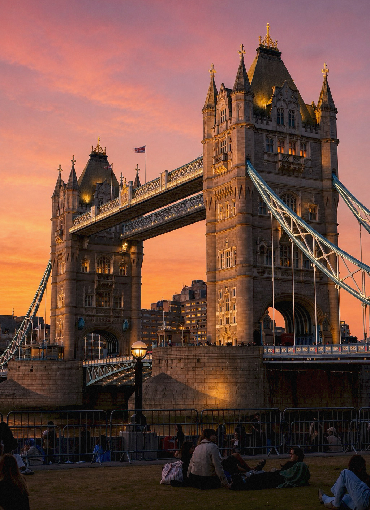
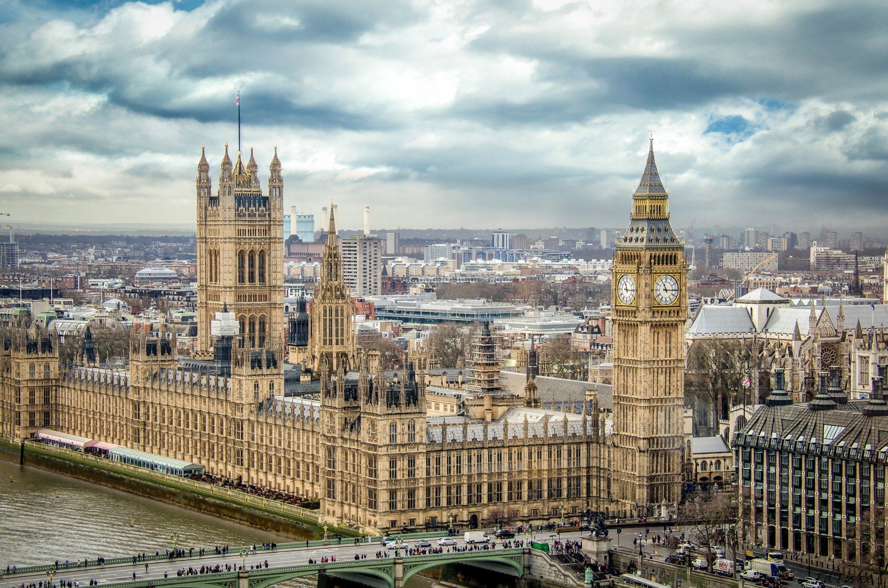
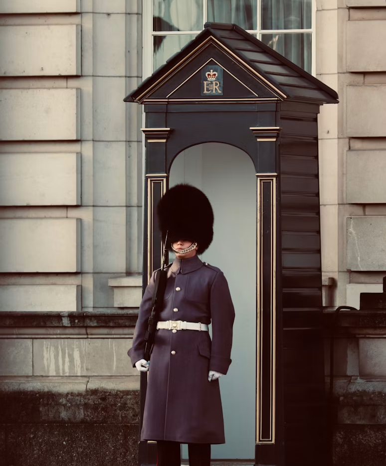
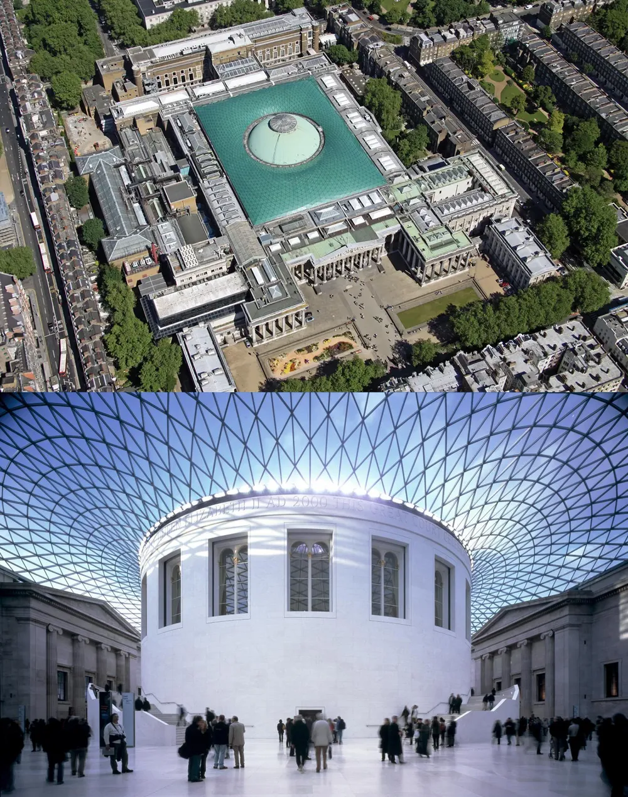

United Kingdom :: 영국
| 인구 | 약 6700만명 | 종교 | 기독교 등 |
|---|---|---|---|
| 언어 | 영어 | 면적 | 243,610km² |
| 화폐 | 파운드(£) | 수도 | 런던 |
타워 브리지
타워 브리지는 템스강 위에 세워진 런던의 대표적인 랜드마크입니다.
고딕 양식의 두 탑과 푸른 철제 구조가 어우러져 고전적인 분위기와 도시적인 인상을 동시에 보여줍니다.
다리 자체가 강한 상징성을 가지고 있어 빅벤과는 다른 방향에서 런던의 풍경을 완성하는 장소입니다.
낮에는 강변 산책로와 함께 런던의 시내 풍경을 감상하기 좋고, 밤에는 조명이 켜져 더욱 선명한 야경 명소가 됩니다.
주변에는 런던탑과 템스강변 코스가 이어져 있어 함께 둘러보기에도 좋습니다.
영국의 오래된 역사와 현대적인 도시 이미지가 자연스럽게 겹쳐지는 장소라 여행 페이지의 소개 카드로도 잘 어울립니다.
근위병 교대식
버킹엄 궁전 앞에서 볼 수 있는 근위병 교대식은 영국 왕실의 전통과 격식을 가장 직접적으로 보여주는 장면입니다.
붉은 제복, 검은 곰가죽 모자, 절도 있는 자세는 궁전의 엄숙한 분위기와 어우러져 영국 특유의 왕실 문화를 강하게 드러냅니다.
단순히 사진을 찍기 좋은 행사가 아니라, 왕실 경비 임무가 의식의 형태로 이어져 온 전통적인 볼거리입니다.
교대식이 진행되는 동안에는 군악대의 연주와 근위병들의 행진이 함께 이어지며, 궁전 앞 광장은 많은 여행객들로 늘 가득합니다.
정해진 동작에 맞춰 움직이는 근위병들의 모습은 화려하기보다는 차분하고 엄격한 인상을 줍니다.
그래서 이 장면은 영국 여행에서 왕실, 역사, 의전 문화를 한 번에 느낄 수 있는 대표적인 순간으로 꼽힙니다.


박물관과 문학의 도시
영국은 대영박물관, 내셔널 갤러리, 자연사박물관처럼 세계적으로 유명한 문화 공간을 가진 나라입니다.
특히 런던에서는 고대 문명, 유럽 회화, 과학과 자연사 자료를 한 도시 안에서 폭넓게 만날 수 있습니다.
화려한 궁전과 랜드마크가 영국의 외적인 이미지를 만든다면, 박물관은 영국이 쌓아온 지식과 역사의 깊이를 보여줍니다.
또한 영국은 셰익스피어, 셜록 홈즈, 해리 포터처럼 문학과 대중문화의 흔적이 강하게 남아 있는 곳이기도 합니다.
거리와 건물, 서점과 극장 곳곳에서 작품의 분위기를 자연스럽게 떠올릴 수 있어 도시 전체가 하나의 이야기 공간처럼 느껴집니다.
그래서 영국 여행은 단순한 관광을 넘어 역사와 문화를 함께 따라가는 느낌을 줍니다.